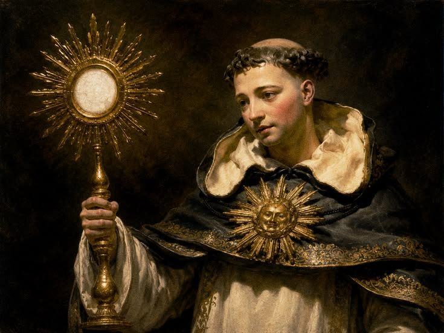

Ad maiorem Dei gloriam
Você sabe defender a sua Fé?
Você já se viu em uma conversa onde questionaram sua fé e você não soube o que responder? Ou talvez tenha tido dúvidas sinceras sobre os ensinamentos da Igreja, mas não sabia onde encontrar fontes seguras e compreensíveis?
Estudos indicam que uma grande parcela dos fiéis possui dúvidas fundamentais sobre a doutrina, mas a minoria busca respostas nas fontes corretas. Muitos acabam se afastando ou não conseguem defender aquilo em que acreditam simplesmente por falta de acesso à informação clara.
O Fides Sapientiae existe para preencher essa lacuna. Aqui, traduzimos a riqueza do Magistério, da Tradição e das Sagradas Escrituras em respostas diretas e fundamentadas. Nosso objetivo é equipar você com o conhecimento necessário para viver e defender a fé católica no seu dia a dia.
Nossos Diferenciais
- Conteúdo 100% embasado no Magistério da Igreja e Catecismo
- Respostas claras para dúvidas teológicas complexas
- Acesso gratuito a artigos, documentos e materiais de estudo
- Comunidade ativa de estudantes, pesquisadores e leigos
Sobre o Fides Sapientiae
Somos uma página dedicada a responder dúvidas de fé, baseadas estritamente no Magistério da Igreja, nas Sagradas Escrituras e nos documentos oficiais papais e conciliares.
Nossa Missão
Fornecer clareza intelectual e espiritual para que todos os católicos possam compreender as razões da sua esperança e dialogar com o mundo contemporâneo.

Cursos e Materiais
Catálogo de Cursos e Materiais Teológicos
Confira nossa listagem de formações e materiais de estudo disponíveis:
| Código | Título / Descrição | Categoria | Investimento | Ação |
|---|---|---|---|---|
| CUR-001 | Introdução às Sagradas Escrituras | Bíblia | Gratuito | |
| CUR-002 | Patrística: Os Pais da Igreja | História / Teologia | Gratuito | |
| MAT-003 | Compêndio de Apologética Católica | E-book PDF | R$ 19,90 | |
| CUR-004 | Teologia Moral e Catecismo | Doutrina | Gratuito | |
| Total de 4 itens disponíveis no catálogo. | ||||
Qual é a sua dúvida?
Principais Dúvidas
Abaixo encontre uma lista com as principais dúvidas relacionadas à Fé Católica, como compreendê-las e respondê-las.
1. O que é a Fé?

A fé é a certeza da existência de Deus e a confiança na sua ação redentora.
Documento de Referência: Catecismo da Igreja Católica (CIC 153-155).
2. Nós Adoramos a Maria?
Não. A Igreja Católica ensina o culto de Hiperdulia (especial veneração) à Virgem Maria por ser a Mãe de Deus, mas a Latria (Adoração) é prestada única e exclusivamente a Deus (Pai, Filho e Espírito Santo).
Documento de Referência: Constituição Dogmática Lumen Gentium (LG 66).
Nenhuma dúvida encontrada para esta pesquisa.